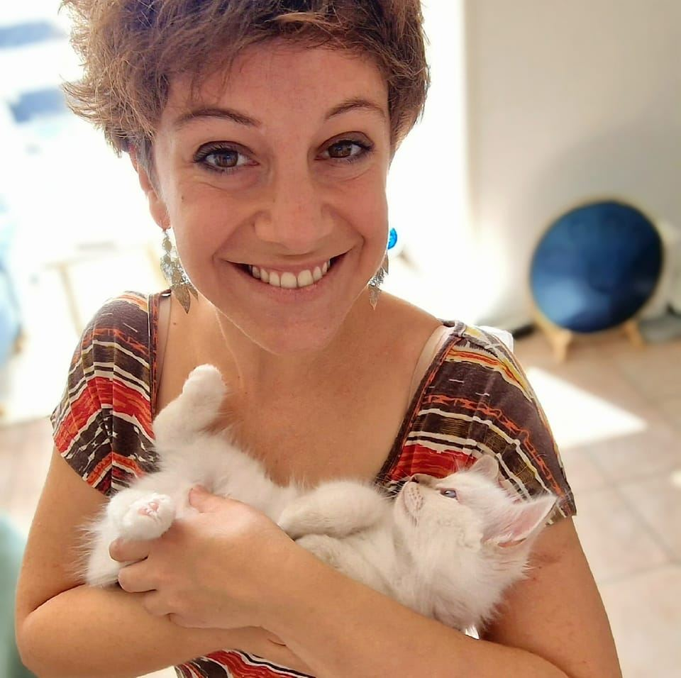

Mes prestations
-
Communication animale

Diagnostique : Je pose un diagnostique précis pour comprendre le taux de vitalité de ton animal et établir des objectifs de guérison.
Communication : Je me connecte à ton animal, je prends ses messages et lui pose des questions. Le procédé est le même pour les animaux qui ont quitté ce monde.
-
Soin énergétique

Diagnostique : Je pose un diagnostique précis pour comprendre ton taux de vitalité et établir des objectifs de guérison.
Soin : Des soins énergétiques sur tes animaux et/ou toi-même.
-
Méditation guidée intuitive

( En cours d'élaboration )
Méditation : Je réalise des méditations intuitives et personnalisées, combinant mon expérience de guide de méditation et de ma nouvelle pratique de soins énergétiques.
Audio vibratoire personalisé : Je me connecte à Toi, et vais questionner ton énergie selon un objectif bien précis. Je canalise une méditation vibratoire de guérison personnalisée que j’enregistre et que tu peux réécouter à ta convenance.
Centre de méditation : Selon intérêt, je t’explique les bienfaits de la méditation et te met en contact avec des centres de méditation qui te permettront de t’aider à t’éveiller à ta vraie nature.
Qui suis-je ?
-
Mon histoire
J’ai étudié la branche du Tourisme à la HES-SO de Sierre, et depuis, j’ai fait divers stages dans le secteur touristique. À l’époque, quand j’ai décidé de m’orienter dans ce secteur, je voulais vendre du bonheur aux gens. Puis c’est moi qui, sous la pression du Travail de Bachelor et de diverses exigences personnelles, que j'ai sombré dans la dépression.
Je suis alors partie en voyage pour me développer personnellement et Me découvrir. Arrivée en Asie du Sud-Est, j’ai commencé à méditer pour moi, puis aussi pour les autres. Mon voyage en sac à dos s’est transformé en projet : me former en tant que guide de méditation, et oeuvrer pour le développement de la méditation en Europe. Là encore, je voulais juste aider les gens à être heureux.
Ces 4 années enrichissantes de voyage autant intérieur qu’extérieur m’ont permis de me fortifier. J’avais récolté assez de joie et de confiance pour retourner en Suisse, m’y établir et commencer le prochain chapitre de ma vie. J’y ai trouvé un travail en tant que Support à la Clientèle pour une application d’e-commerce, puis je suis devenue RH dans une boulangerie.
-
Ma cause

Cette petite flamme en moi, celle qui cherche toujours à donner du bonheur aux gens, cette flamme cherche à grandir. Ma cause, tu l’auras compris, c’est d’aider les gens à être heureux et épanouis. Tout est lié, c’est la conscience de Soi qui doit évoluer, pour que l’on puisse apprendre les principes du monde, et suivre le flux de la Nature pour être véritablement heureux.
-
Mon engagement
Aujourd’hui, après avoir pratiqué la méditation, guidé des gens en méditation, suivi des ateliers de formation en communication animale et en soins énergétiques, je t’aide à mieux te comprendre à travers les comportements de ton animal. Je te propose donc de communiquer avec ton animal, de te transmettre ses messages, et de le soigner. À côté, je suis en train de créer un projet de méditation guidée intuitive. J’en parlerai plus en détails en temps et en heure. Et le reste….ça suivra selon le cours naturel de la Vie.
asdsa
Contact
Pour prendre un rendez-vous ou pour toutes questions, je t'invite à me contacter par téléphone (voir ci-dessous) ou à m'écrire directement par e-mail !